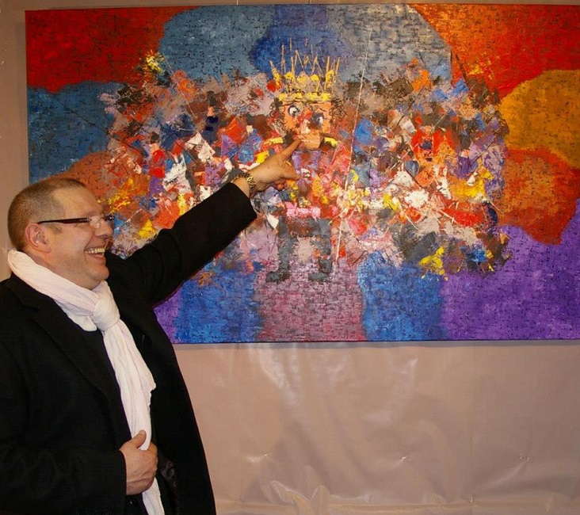

<div class="container">
	<div class="row">
		<div class="one-half column">
			
		</div>
		<div class="one-half column">
			<h1>Bonjour !</h1>
			<p>
				Didier Cance est né en 1960, peintre dans l'âme depuis l'âge de neuf ans, sa peinture en perpétuel mouvement est un mélange d'art figuratif et abstrait.
			</p>
			<p>
				En 1988 il arrive en Bretagne, se met immédiatement à peindre des tableaux représentant la région qui lui est une source d'inspiration picturale importante.
			</p>
			<p>
				{% assign image_files = site.static_files | where: "image", true %}
				{% for myimage in image_files %}
				  {{ myimage.path }}
				{% endfor %}
			</p>
			<p>
				En 1992 il crée sa propre galerie de peinture à Josselin dans le Morbihan suivi en 1993 d'une autre à Douarnenez dans le Finistère.
			à ce jour Didier a peint environ 400 tableaux répandus à travers l'Europe.
			Sa vie d'artiste est centrée sur une véritable recherche picturale.
			</p>
			<label>
				" L'art pictural est pour moi l'élément essentiel à ma construction humaine et à l'élaboration d'un sentiment de parfaite harmonie entre mon esprit et les "choses" matérielles de notre société. "
			</label>
		</div>
	</div>
</div>
